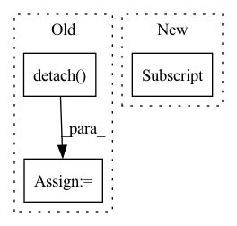

Pattern ID :2887
Before Change
image_tokens += [image_token]
if self.is_verbose:
token = int(image_token.detach() .numpy())
print("image token {} is {}".format(i, token))
return torch.cat(image_tokens)After Change
image_token = self.start_token
for i in range(self.sample_token_count):
token_index = self.token_indices[i:i+1]
probs, keys_values_state = self.decode_step(
text_tokens = text_tokens,
encoder_state = encoder_state,
keys_values_state = keys_values_state,In pattern: SUPERPATTERN
Frequency: 5
Non-data size: 3
Instances Fragment ID: 9555811
Project Name: kuprel/min-dalle
Commit Name: 17c96fe110fad3d48ea591dcd46475f521499770
Time: 2022-06-28
Author: brkuprel@gmail.com
File Name: min_dalle/models/dalle_bart_decoder_torch.py
M Class Name: DalleBartDecoderTorch
N Class Name: DalleBartDecoderTorch
M Method Name: forward(3)
N Method Name: forward(3)
M Parent Class: nn.Module
N Parent Class: nn.Module
M File Name: min_dalle/models/dalle_bart_decoder_torch.py
N File Name: min_dalle/models/dalle_bart_decoder_torch.py
M Start Line: 205
M End Line: 222
N Start Line: 206
N End Line: 212
Before Change
logits = list()
targets = list()
for latent, code, transformer, ffn in zip(latents, codes, self._transformer, self._ffn):
latent = latent.detach()
n, d, h, w = latent.shape
// [h, w, n, d]
latent = latent.permute(2, 3, 0, 1)
latent = self._position(latent)After Change
def forward(self, latents, codes):
logits = list()
targets = list()
for latent, code, transformer, ffn in zip(latents, codes[1:] , self._transformer, self._ffn):
// latent = latent.detach()
n, d, h, w = latent.shape
// [h, w, n, d] Fragment ID: 9555810
Project Name: xiaosu-zhu/mcquic
Commit Name: 02c71eba9577b6fcd3a0b7f4cfc51ea8ccf29a0b
Time: 2021-05-26
Author: xiaosu.zhu@outlook.com
File Name: src/mcqc/models/stackedAutoRegressive.py
M Class Name: StackedAutoRegressive
N Class Name: StackedAutoRegressive
M Method Name: forward(3)
N Method Name: forward(3)
M Parent Class: nn.Module
N Parent Class: nn.Module
M File Name: src/mcqc/models/stackedAutoRegressive.py
N File Name: src/mcqc/models/stackedAutoRegressive.py
M Start Line: 36
M End Line: 37
N Start Line: 35
N End Line: 35
Before Change
neg = dists + 1e5 * pos_mask.float()
neg_weight = (self.neg_margin - neg).detach()
neg_weight = torch.max(torch.zeros_like(neg_weight), neg_weight)
lse_negative = torch.logsumexp(self.log_scale * (self.neg_margin - neg) * neg_weight, dim=-1)
loss = F.softplus(lse_positive + lse_negative) / self.log_scaleAfter Change
// pos = dists + 1e5 * (~pos_mask).float()
pos = furthest_positive[:, None]
pos_weight = (self.pos_optimal - pos).detach()
pos_weight = torch.max(torch.zeros_like(pos_weight), pos_weight)
lse_positive = torch.logsumexp(-self.log_scale * (pos - self.pos_margin) * pos_weight, dim=-1)
Fragment ID: 9555812
Project Name: xuyangbai/d3feat.pytorch
Commit Name: f19b93196387b22f1cb416f9a0214b2cffaf8e5e
Time: 2020-07-16
Author: 653823597@qq.com
File Name: utils/loss.py
M Class Name: CircleLoss
N Class Name: CircleLoss
M Method Name: forward(4)
N Method Name: forward(4)
M Parent Class: nn.Module
N Parent Class: nn.Module
M File Name: utils/loss.py
N File Name: utils/loss.py
M Start Line: 123
M End Line: 152
N Start Line: 125
N End Line: 157
Before Change
n, c, h, w = xRaw.shape
// [n, c, h, w] -> [h, w, n, c]
*************** TODO: NEED DETACH? *******************
encoderIn = xRaw.detach() .permute(2, 3, 0, 1)
// encoderIn = xRaw.permute(2, 3, 0, 1)
// [h, w, n, c] -> [h*w, n, c]
if False:
encoderIn = self._position(encoderIn).reshape(-1, n, c)
// encoderIn = encoderIn.reshape(-1, n, c)
// [h*w, n, c]
x = self._encoder(encoderIn)
else:
x = encoderIn.reshape(-1, n ,c)
// similar to scaled dot-product attention
// [h*w, N, Cin], M * [h*w, n, k]
quantized, samples, logits = self._attention(x, temp, True)After Change
for i, (xRaw, k) in enumerate(zip(latents, self._k)):
n, c, h, w = xRaw.shape
// [k, 1, c]
codebook = getattr(self, "codebook")[:, None, :]
// [n, c, h, w] -> [h, w, n, c]
encoderIn = xRaw.permute(2, 3, 0, 1)
// encoderIn = xRaw.permute(2, 3, 0, 1)
// [h, w, n, c] -> [h*w, n, c] Fragment ID: 9555798
Project Name: xiaosu-zhu/mcquic
Commit Name: a4a40624c11a9779699f4a37cccb5b5ed8bc5048
Time: 2021-04-10
Author: xiaosu.zhu@outlook.com
File Name: src/mcqc/models/quantizer.py
M Class Name: TransformerQuantizer
N Class Name: TransformerQuantizer
M Method Name: forward(3)
N Method Name: forward(3)
M Parent Class: nn.Module
N Parent Class: nn.Module
M File Name: src/mcqc/models/quantizer.py
N File Name: src/mcqc/models/quantizer.py
M Start Line: 271
M End Line: 298
N Start Line: 504
N End Line: 534
Before Change
dump_distograms_path = Path(dump_distograms_path)
for i, output in enumerate(outputs):
pt, pp, pd, po = output // pylint: disable=unused-variable
distogram_distribution = pd.cpu().detach() .numpy()
distogram = distogram_distribution_to_distogram(distogram_distribution)
plot_distogram(
distogram, dump_distograms_path / f"dist_model_{i:02}.jpg"After Change
if dump_distograms_path:
dump_distograms_path = Path(dump_distograms_path)
for i, output in enumerate(outputs):
distogram_distribution = output["dist"] .cpu().detach().numpy()
distogram = distogram_distribution_to_distogram(distogram_distribution)
plot_distogram(
distogram, dump_distograms_path / f"dist_model_{i:02}.jpg" Fragment ID: 9555806
Project Name: learn-ventures/trdesign-pytorch
Commit Name: 3781c5aaf6b84c2935adf5a195e8c032e64e0819
Time: 2021-03-17
Author: xandersteenbruggex@gmail.com
File Name: src/tr_Rosetta_model.py
M Class Name: trRosettaEnsemble
N Class Name: trRosettaEnsemble
M Method Name: forward(4)
N Method Name: forward(4)
M Parent Class: nn.Module
N Parent Class: nn.Module
M File Name: src/tr_Rosetta_model.py
N File Name: src/tr_Rosetta_model.py
M Start Line: 251
M End Line: 269
N Start Line: 257
N End Line: 270